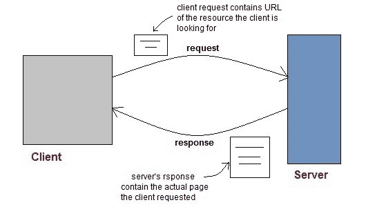
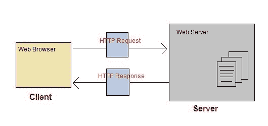
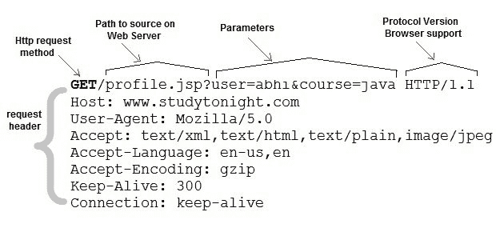
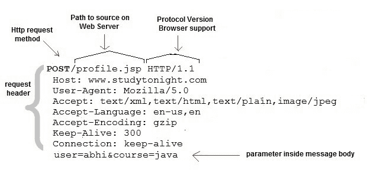

Servlet：Web 简介
原文：https://www.studytonight.com/servlet/introduction-to-web.php
Web 由通过有线和无线网络连接的数十亿个客户端和服务器组成。网络客户端向网络服务器发出请求。web 服务器接收请求，找到资源，并将响应返回给客户端。当服务器响应请求时，它通常会向客户端发送某种类型的内容。客户端使用网络浏览器向服务器发送请求。服务器通常用一组用超文本标记语言编写的指令向浏览器发送响应。所有浏览器都知道如何向客户端显示 HTML 页面。

网络应用
网站是静态文件(网页)的集合，如 HTML 页面、图像、图形等。一个 Web 应用是一个在服务器上有动态功能的网站。谷歌、脸书、推特都是网络应用的例子。
超文本传输协议
- HTTP 是客户端和服务器在网络上用来通信的协议。
- 它类似于其他互联网协议，如 SMTP(简单邮件传输协议)和 FTP(文件传输协议)，但有一个根本区别。
- HTTP 是一个无状态协议，也就是说 HTTP 每个连接只支持一个请求。这意味着使用 HTTP，客户端连接到服务器发送一个请求，然后断开连接。这种机制允许更多的用户在一段时间内连接到给定的服务器。
- 客户端发送一个 HTTP 请求，服务器使用 HTTP 用一个 HTML 页面回答客户端。

HTTP 方法
HTTP 请求可以使用多种方法，但是你最常用的是获取和发布。方法名告诉服务器正在发出的请求的类型，以及消息的其余部分将如何格式化。
HTTP 方法和说明:
|
|
| | --- | --- | | 选择 | 请求/响应链上可用的通信选项请求。 | | 得到 | 请求使用给定的 URI 从服务器检索信息。 | | 头 | 与 GET 相同，只是它不返回消息体，只返回标题和状态行。 | | 邮政 | 请求服务器接受包含在 HTTP 方法主体中的实体。 | | 删除 | 请求服务器删除资源。 | | 连接 | 保留用于可以切换为隧道的代理。 | | 放 | 这和 POST 是一样的，但是 POST 是用来创建的，PUT 可以用来创建也可以用来更新。它用上传的内容替换目标资源的所有当前表示。 |
获取和发布请求之间的区别
|
|
| | --- | --- | | 数据以报头形式发送到服务器 | 数据在请求正文中发送 | | 获取请求只能发送有限数量的数据 | 可以发送大量数据。 | | 获取请求不安全，因为数据暴露在 URL 中 | 发布请求是安全的，因为数据没有在网址中公开。 | | Get 请求可以加入书签，效率更高。 | 发布请求不能被书签标记。 |
PUT 和 POST 方法的一般区别
以下是 PUT 和 POST 方法之间的一些基本区别:
- 将发布到网址会在服务器定义的网址上创建子资源，而将发布到网址会在客户端定义的网址上创建/替换整个资源。
- POST 创建一个子资源，因此 POST 到
/books将创建一个资源，该资源将位于/books资源下。/books/1。两次发送相同的帖子请求将创建两个资源。 - PUT 用于在客户端已知的 URL 创建或替换资源。
- 当客户端在创建资源之前已经知道 url 时，PUT 必须用于 CREATE。
- PUT 会替换已知 url 处的资源(如果它已经存在)，因此两次发送相同的请求没有效果。换句话说，对 PUT 的调用是幂等的。
解析一个 HTTP GET 请求
Get 请求包含服务器的路径和添加到其中的参数。

解析一个 HTTP POST 请求
Post 请求用于在服务器上发出更复杂的请求。例如，如果用户用多个字段填写了一个表单，而应用希望将所有表单数据保存到数据库中。然后表单数据将在 POST 请求正文中发送到服务器，也称为消息正文。
